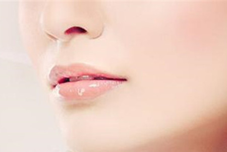

如果嘴唇已经开始干裂尽量不要让嘴唇再碰到水。如果开始 脱皮了，最好连刷牙都停止一段时间，建议在让嘴唇恢复的这 段时间里，用口香糖或者牙线代替刷牙。

尤其是骑车一族，戴个口罩能挡住外面凛冽的寒风。戴口罩的目的很简单，是为 了保持嘴唇的温度和湿度，以免缺水、干燥。
如果嘴唇已经开始干裂尽量不要让嘴唇再碰到水。如果开始脱皮了，最好连刷牙都停 止一段时间，建议在让嘴唇恢复的这段时间里，用口香糖或者牙线代替刷牙。
按摩嘴唇的方法并不困难，只要每天晚上临睡之前，拿化妆棉沾一些蜂蜜，涂在嘴唇上， 然后用手指头轻轻按摩，以帮助促进血液循环，使嘴唇获得氧分，增加营养，嘴唇就 可以变得滋润了。
如果说，你已经开始觉得嘴唇干，可以用干净的棉签往嘴唇上涂抹一些家庭里都有的植物油或者是蜂蜜。不过糖尿病的病人切忌涂抹蜂蜜。
处理已翘起的唇皮，可用小剪细心地对着镜子剪掉。千万不要用手或钳去撕，以免撕裂嘴唇，导致疼痛、流血，甚至感染，那里可是医学上所称的“危险三角”哦。
要是已经有化脓迹象出现，要用青霉素或者红霉素软膏抹在化脓的地方。另外，还有一样大家家里都有的东西，是治疗口唇开裂的好药物。那就是牙膏，牙膏治疗的效果更好，对付那些比较厉害的口唇开裂更有用。一般牙膏里都含有薄荷，或者是其他的杀菌成分，能够起到很好的作用。
睡前将橄榄油涂在嘴唇上吸收20分钟以上，然后擦净。还可将少量奶粉用水调成糊状，厚厚地涂在嘴唇上，充当唇膜。
护唇膏应该是在嘴唇健康的时候用，如果嘴唇已经开始脱皮了，那也要停止使用。
另外，专家还提醒，嘴唇干裂有的时候不仅仅是因为气候造成的，还有不少口腔、牙齿的疾病也会导致嘴唇干裂，引起唇炎。所以冬天在补水的时候，还要注意口腔的清洁，才能有效地预防干唇。如果唇部的皲裂、结痂症状长期不愈，应及时到医院就诊，尽早查清病因，对症治疗。
如菠菜、芥菜、苋菜、荠菜、黄花菜（鲜黄花菜应经蒸或煮处理后再食用，防止秋水仙碱中毒）、茭白、萝卜、茄子、竹笋、西红柿、冬瓜、黄瓜、丝瓜、苦瓜、蘑菇、银耳、绿豆、大豆及其制品。
如紫菜、海带、海蜇、蛤蜊、龟肉、田螺、蟹、泥鳅、鲤鱼、鳗鱼、黑鱼、牡蛎。
如乌骨鸡、猪肉、鸭肉、鸭蛋、鹅蛋、鹅肉、猪肺、兔肉、马肉及奶类。
如芝麻、松子、黑豆、小米、小麦、大麦。
如桑椹、甘蔗、香蕉、西瓜、甜瓜、枇杷、芒果、梨、罗汉果、柿子、菠萝、椰子、荸荠、莲藕、生菱、莲子、百合、薏苡仁、枸杞子、茶叶、菊花、蜂蜜、冰糖、食盐等。